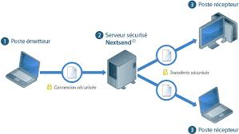
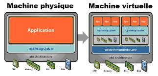
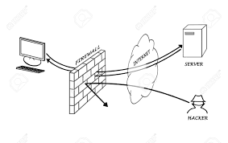

<body bgcolor="b3f7ff"></body>
<table border="3" width="50%" height="200">
    <tr> <td> Notion</td> <td>Def</td> <td>image</td></tr>
    <tr> <td>Serveur </td> <td>Un ordinateur ou un programme qui fournit des services à d'autres ordinateurs (clients). </td> <td> </td></tr>
    <tr> <td>Virtualisation </td> <td>Technique permettant de créer une version virtuelle de ressources (serveurs, réseaux, etc.). </td> <td> </td></tr>
    <tr> <td>Pare-feu (Firewall) </td> <td>Dispositif de sécurité réseau qui surveille et contrôle le trafic entrant et sortant. </td> <td> </td></tr>
</table>
<br>
<a href="index.html">Aller vers page d'accueil</a>